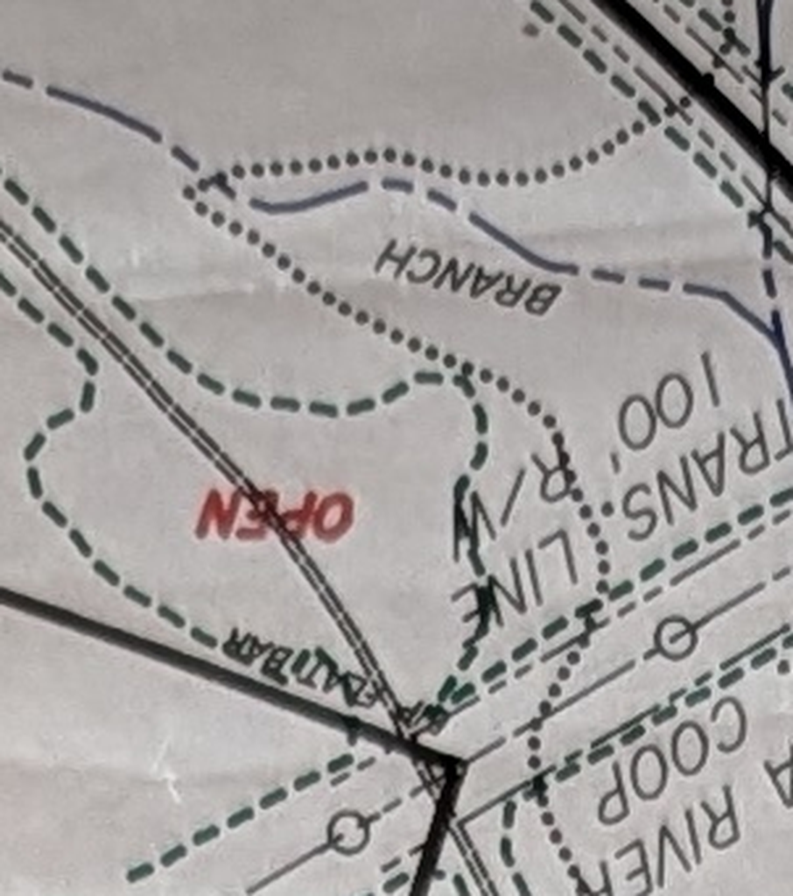
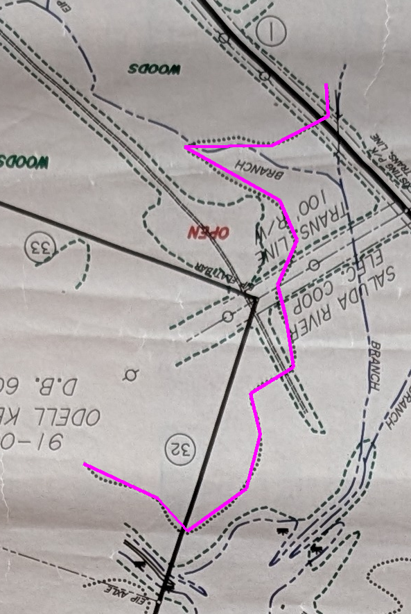
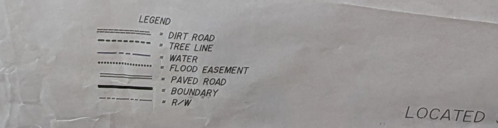

The magenta line is what you drew. 94.8% of it sits on printed linework on sheet 07, and only 2–5% on any of the three hand-drawn inks I extracted from. So it is definitely a printed symbol — the question is which one.

The line you followed is a single row of round dots. Note what surrounds it: green long dashes (tree line), blue dashes (the creek, labelled BRANCH), and running northwest a double thin parallel line.


Seven symbols. Two are dot-like:
DIRT ROAD = a double row of fine ticks (two parallel hatched lines)
FLOOD EASEMENT = a single row of round dots
By the legend, a single dot row is the flood easement — and yours follows the BRANCH, which is where a flood easement would run. The double parallel line nearby is the dirt road, and that is the layer nothing has extracted yet.
You know this ground and I do not. If there is a trail along that dotted line, the legend is not the last word — tell me and I will extract it.